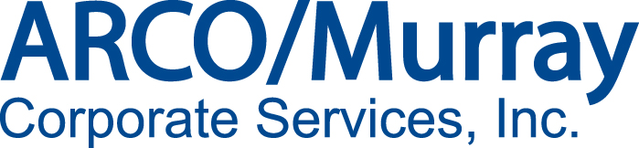

PROFESSIONAL SUMMARY:
Technical Analyst proficient in a wide array of technologies. Talent for adapting to change and quickly mastering emergent technologies. Demonstrated history of implementing solutions which increase efficiency and reduce costs. Always eager to learn and improve new technologies, techniques, and concepts.
- Managed highly successful projects resulting in company-wide cost reduction and increased efficiency
- Consistently responsible for Business Analysis duties including gathering requirements, end user training, troubleshooting and providing client support
- Aided in the design and deployment of infrastructure improvements for corporate backbone
PROFESSIONAL EXPERIENCE:

ARCO/Murray Corporate Services, Inc., St. Louis, MO
January 2016 to Present
ERP Analyst
- Worked with the business owners to implement Concur, an expense reporting and AP software, to several ARCO affiliate companies.
- Created and presented training material for Concur. Training materials included manuals, presentations, and videos.
- Implemented Keystyle, an employee portal and electronic time entry solution.Collaborated with payroll to develop new processes and policies for use with the software.
- Administered Vista ERP System. Tasks included: creation and deactivation of accounts, technical support with Viewpoint or the end user, managed integration with Vista and third-party software, and coordinating software maintenance with IT group.
- Developed customization within the Viewpoint ERP system based on the needs of the departments or companies. Examples include: user-defined lookups, custom fields, custom notifications, user-defined forms, and validation.
- Wrote Crystal Report and SSRS reports for use by Accounting, Payroll, HR, and Operations.
- Interfaced with third party consultants for further customization or report creation. This includes requirement gathering from project owners, scoping of project with vendor, and ensuring follow through by all parties to completion.
- Managed Viewpoint for Content Management. Maintained workflow logic and needs of enterprise.
- Controlled the management and acquisition of software licenses for Viewpoint, Keystyle, and Concur.
Service Finance Company, Boca Raton, FL
May 2015 to December 2015
IT Manager
- Migrated from exchange journaling and Barracuda to Mimecast, a cloud based email archiving, spam protection and threat protection solution. This greatly improved the security and stability of corporate communications.
- Recommended and implemented Lansweeper, a network scanning software to easily manage the hardware and software inventory, version control, package deployment
- Manage the employee on and off boarding process in active directory and exchange; established best practice principles including the use of roaming profiles, folder redirection, and GPO governance
- Brought online the disaster recovery site as part of the company’s Business Continuity Plan; leveraged Terminal Services to gain access to company network and standard suite of applications and Shoretel softphones for telecom
- Researched and deployed OpenFire and Spark-a secure, internal corporate messaging system which aligned with the company's SSAE 16 security and controls standards
- Standardized and cloned a workstation image, using Clonezilla, to expedite the deployment of replacement machines
- Created several Windows Server 2008 R2 and Linux VM servers on multiple VMWare ESXi hosts for use with corporate applications and databases
- Managed the Palo Alto firewall rules at HQ and DR locations
- Managed the corporate MDM platform, AirWatch
- Automated the nightly bulk synchronization of files to financial institutes through the use of cmd and WINSCP scripting
- Researched, recommended and migrated to an automated support ticketing system, OSTicket
- Researched, recommended and migrated to the Atlassian Projected Management system, Jira.
- Increased productivity by adding electronic signatures to many form letters through SQL Server Reporting Service
- Installed a Closed Circuit TV system throughout the company
- Research and installed fire, flood, temperature sensors and monitoring equipment in the network room
- Identified out of spec workstations then researched and replaced with in spec hardware
- Identified out of compliance software then research and replaced with compliant versions or removed from network
- Helped work IT support ticket when needed